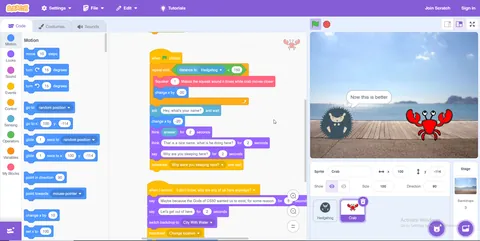
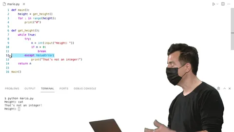

CS50 My experience
Explore one student's experience taking Harvard's renowned CS50 introduction to computer science online course.
By Sukalyan RoyPublished 15 min read

Almost everyone knows about the free course offered by Harvard, CS50x Introduction to Computer Science.
I took this course in the gap between the end of High school and the beginning of College, dropped it for almost a year because I didn't feel like it, then picked it back up and finished it in the nick of time just before the deadline, to get my certificate.
Let me walk you through my journey, week by week through this course as I experienced it. This will be mostly a slightly edited version of the notes I took while doing the course.
The purpose of this post is not to teach anything, but give a glimpse into what my thoughts were like while i was going through the course.
Started this on Edx in the first week of August 2022.
https://manual.cs50.io/ is a very handy reference for C functions.
Week 0 #
We used the drag and drop visual based programming language called Scratch.
We had to make a simple game or visual story using the editor and I made a very short conversation between a crab and a hedgehog.

Week 1 #
The Lecture was interesting, it introduced me to C.
The syntax being very similar to java, i could really understand most of it. With practice i'll be able to do most things i can do in Java.
Update: These lines are really weird in retrospect because I spent so much time delving into C, C++ and Python in the coming weeks without even touching java that at this point I know more about C than I do about Java.
Problem Set 1 #
The following lines are my observation while I was stuck in the problem sets.
Though I managed to come through and finish them.
Mario problem was pretty simple, so was Cash. but the credit program messed with me.
By changing the for loops to a while loop, i finally did the Mario pattern one.
I finished the Cash program but didn't touch credit. The luhn's algorithm is messing with my mind but i'll try it at the very end again.
Week 2 #
The "make" command #
It doesn't actually compile the code itself. It calls clang which is the compiler.
Speaking of compiling, it's actually a 4 step process:
-
Preprocessing: This is where it checks all the header commands in the code and replaces them with appropriate function calls from the different packages
-
Compiling: This is where the code is converted into Assembly language.
-
Assembling: The assembly code is converted into Binary machine language
-
Linking: This is where all the binaries of our code and the packages are combined(linked) together into a single binary file
Debugging #
check out https://en.wikipedia.org/wiki/Code_smell
This course uses the command debug50 to launch the debugger which has two main ways of navigating the code.
First is "step through" where you just move from one line to the next.
The next is "Step in" where you can actually enter a function through it's function call and check the code inside.
The entire process of debugging is basically like a computer assisted "Dry run" where you can see the values of variables at each step of the operation.
Always remember to mark the line from which debugging is to start
We can also do what's called the Rubber duck debugging where you explain each line of your code and how and why it works(or should work) to a rubber duck or any other inanimate object.
When you say things out aloud, you will notice logical errors in what you're saying much easier than just silently staring at code.
Arrays #
A string is an array of characters so if the name of the variable is "s" then you can use the syntax "s[i]" to get the character at that position.
You can even use while(s[i] != '\0') to account for characters upto the end of each string. Putting a counter in it, you can count the number of characters in a string.
We can do this because, a string being a character array, we need something to figure out where one string ends and another begins. The \0 is a special character considered only as one char, and it's called "Nul".
Command line arguments #
Just like in Java we write
public static void main(String args[])
In C we have to write
int main(int argc, string argv[])
argc counts the number of command line inputs the user gives.
argv is the string array containing all of them(each input is seperated by whitespaces)
Note: the 0th element is argv is the program call ie. the ./program_name that you put into the terminal to execute it.
Problem set 2 #
The Scrabble one was easy, everything was already there i just wrote some basic stuff.
The Readability program keeps breaking. It works fine for grades less than 1 or more than 16 but inbetween it anchors onto either 2 or 8. and now after I changed it, it's showing other random values.
I fixed it by adding 1 to the word counter, but i don't know why that is the problem.
I left caesar for later for some reason, but I finished substitution with some effort. Edge cases like repeating characters in the Key is still a bug in the code.
Week 3 #
This week is about algorithms.
Time and space complexity #
We write the complexity as a function of the input, where only the most numerically significant term of the input expression is considered. ie. In
only the n^2 term will be considered.
We write it as a function of O() when it's the worse case.
\Omega() for the best case
and \Theta() when the best and worse case are the same, essentially, average case.
Searching and sorting #
Then the lecture goes on to describe Linear and Binary search and Selection,Bubble and Merge sorts.
How they work, when they fail and how to do better, and the corresponding complexity notations.
Structs #
This is where we define our own variable types. And i've not written much code in the notes yet but the syntax here is worth keeping in mind:
typedef struct
{
// list of variable definitions for this type like:
string name;
string number;
}
person;
// the above line is where you name the typeTo get or set values into a user defined struct, we use the . as follows:
person people[2];
//People is the array of type person
people[0].name = "name of someone";
people[0].number = "Someone's number";and so on and so forth for any number of items of the type.
You access each kind of value store-able in a user defined type by this method.
Note: This represents the Computer science concept of Encapsulation
enum #
Using typedef enum we can create a custom type which has to match exactly one of the values which we specifiy inside the definition. It's like defining a boolean type to be either true or false but we can add arbitrary number of contents.
The Compiler assigns a number starting from 0 to each value inside the typedef and we can use each value directly in our code or we can use the numbers.
#include<stdio.h>
enum year{Jan, Feb, Mar, Apr, May, Jun, Jul,
Aug, Sep, Oct, Nov, Dec};
int main()
{
int i;
for(i=Jan; i<=Dec; i++)
printf("%d ", i);
return 0;
}Macros #
We can define constant values using const dataType variableName = value; But we can also use Macros as #define variableName value no type or assignment needed.
It is an accepted convention to write all constant values in ALL CAPS.
#define is a preprocessor Directive and like all such lines, it starts with a #.
Recursion #
This is where you solve a problem by solving the same problem but for smaller sets. Remember factorial stuff you did in Java. This is processing efficient but consumes more memory.
Problem Sets #
Runoff #
From what I see here, the problems are unusually well specified with hints and explanations. Although i might not be able to understand the problems without them, with the structure already given to us, i think it's solvable.
The vote function is all about checking if the input is valid or not by comparing against the names of the candidates and simply assigning that particular candidate as the i'th preference of the particular voter.
And here on, rather than summarizing what I did on every function, it suffices to say that following the specifications made things really easy.
The real issue is that IRL problems are usually never this well specified, nor do they come with a tool like check50.
Tideman #
One of the problems I left unfinished.
Give it a shot if you're looking for a challenge and do let me know how you're solving it.
https://cs50.harvard.edu/x/2022/psets/3/tideman/
Week 4 #
This week deals with Memory.
It starts over with a hexadecimal intro. As all memory addresses are marked with Hexadecimal to allow for 64 bit addresses and allow us to have massive amounts of memory. hex values usually start with 0x then the actual hexa value.
If we want to declare a pointer variable which stores the address of some value we do the following:
int *p = &n;where the * before the p denotes it as a pointer and the & before n means that we want the memory address of n.
The next time we use *p it acts as a dereference operator, that is, it returns the value stored in that address.
If we run a program which assigns a value to a variable and prints it's memory address, we'll see the every time we run it, the address changes. This is because the OS is always fiddling with the memory and moving things around.
Strings #
As we know from the previous weeks, a String is just an array of characters, and in the case of C, is implemented using a user defined struct which is stored as a prototype in the CS50.h library which we import.
We know that a string ends with a null character or \0 but how is it stored?
It is actually stored in the following way:
The string datatype is just a pointer to the memory address of the first character of the string and it is considered a single string until the null is reached.
We can now define strings directly, as they are implemented in the CS50 library by doing char *s = "The string";
Now here is a subtle thing:
int main(void)
{
string s = "HI!";
char c = s[0];
char *p = &c;
printf("%p\n", s);
printf("%p\n", p);
}If you do this, then the s[0] is copied over to another location in the memory and has a different address which you can check by running this code.
But if you do the following:
int main(void)
{
string s = "HI!";
char *p = &s[0];
printf("%p\n", p);
printf("%p\n", s);
}Then the address of the string is directly passed and so both the addresses printed will be the same.
And this is the reason why we cannon simply check if String_1 == String_2 because they only store the first character's memory address which is different for different strings even if the characters themselves are identical.
When we do the following:
string String_2 = String_1;it doesn't actually copy the strings from one variable to another, but just makes both the variables have the same pointers to the same memory address, so if we change one of them, both of them end up changing.
Memory allocation #
To copy stuff from one string to another, we first have to allocate memory to it. To do so we use the following
char *t = malloc(strlen(s) + 1);We add one to the length of the string to account for the nul character in the end.
We can then copy using a loop or directy use the following function:
strcpy(Destination, source);Important thing to remember:
free(t);Always free the allocated memory when work is done.
We should also check
if (t == NULL)because if there is no memory available in the device, the malloc function will return NULL(a value comprised of all zeroes just like nul but the all caps means that it's for pointers).
Garbage Values #
When we allocate or free memory, the stuff changes in the ram.
In certain cases when something is defined but no values are assigned to it, it might just be associated with a memory address with old values from past programs or OS operations. Now if anyone accesses it, they might get access to something they are not supposed to. These kinda values are called garbage values.
Local and Global variables #
We know that if we define a variable locally and pass it to another method, then whatever changes to the passed value happens in there, unless explicitly returned and changed in the original method, the original variables will remain the same
We can fix this by defining Global Variables but they might give access to certain data that should not be accessed.
Thus we should define variables locally and instead of passing by value we pass by reference by passing the pointers of those variables in the function arguments.
Overflow #
The place where memory allocated by malloc is called the heap and where the local variables are allocated memory is called the stack
If we call malloc for too much memory, we will have a heap overflow, since we end up going past our heap. Or, if we call too many functions without returning from them, we will have a stack overflow, where our stack has too much memory allocated as well
Debugging #
We should be familiar with the valgrind debugger. Though I've had a lot of trouble trying to set it up on windows, so this part is postponed for the time being.
scanf #
We can use scanf() to assign values to variables by taking input from the user as follows.
int main(void)
{
int x;
printf("x: ");
scanf("%i", &x);
printf("x: %i\n", x);
}Similarly for other types except String, cause that needs memory to be allocated. If we allocate memory, we can input strings like this too.
Files #
The stdio library has some functions that help us read and write to files, which would be useful for the problem sets and cool in general.
They are as follows:
-
fopen()Syntax:FILE *ptr = fopen(<filename>,<operation>);The operations arerfor read,wfor writing(this will start from the beginning and overwrite everthing) andato append text at the end without overwriting anything. -
fclose()Syntax:fclose(<file_pointer>)This just closed the file so that we don't access it again mistakenly. -
fgetc()Syntax:char ch = fgetc(<file_pointer>);This gives us the next character in the file pointed to. This only works if the pointer is set usingfopenwith the read operation. -
fputc()Syntax:fputc(<character>, <file_pointer>);This is used to write or append single characters to a file, given that it's pointer is set towora. -
freadandfwriteSyntax:fread(<Buffer>,<size>,<quantity>,<file_pointer>);Wherebufferis the pointer to the variable or array where you want to store this read data(or in case of writing, from where you want to write data).sizeis the size of one value of the required datatype.quantityis how many units of the data you want to read or write. andfile_pointeris pointer to the file in use. What I observed here, is that it usually doesn't matter if you switch the size and quantity arguments. But how does it effect performance is something to consider
Problem set #
Filter #
First I'll finish the less version and then try to do the more version(most of the methods are same to both)
The blur function was blurring but the values were very slightly different from the Required ones. I stopped trying and moved on, submitting because the rest worked perfectly.
Week 5 #
Arrays #
-
Insertion is bad. Lots of shifting to fit an element in the middle (inserting at the end is not as bad).
-
Deletion is bad. Lots of shifting to fit an element in the middle.
-
Lookup is great. Random access, constant time.
-
Relatively easy to sort.
-
Relatively small size-wise.
-
Stuck with a fixed size, no flexibility.
Linked Lists #
It's a data structure implemented using structs. Here you need to define it with a number field and a pointer to the next element of the linked list.
typedef struct node
{
int number;
struct node *next;
}
node;Then we need to initialize it as node *list = NULL; To add a node, first we need to allocate memory then add the number field value, along with a null pointer to the next node.
node *n = malloc(sizeof(node));
if (n != NULL)
{
n->number = 1;
n->next = NULL;
}Since n is a temporary variable, we want the list to point to the same plce where n is pointing. list = n;
Similarly we can make Binary Trees which are basically bidirectional linked lists with each node pointing to two daughter nodes, the smaller value on the left and the larger on the right. Then comes Hash Tables, Tries, etc etc.
-
Insertion is easy - just tack onto the front.
-
- Deletion is easy
-
- once you find the element (change a few pointers, then free a node).
-
- Lookup is bad
-
- have to rely on linear search.
-
- Relatively difficult to sort unless you're willing to compromise on super-fast insertion and instead sort as you construct.
-
-Relatively small size-wise (not as small as arrays).
Hash Tables #
-
Insertion is a two-step process - hash, then add.
-
- Deletion is easy - once you find the element.
-
- Lookup is on average better than with linked lists because you have the benefit of a real-world constant factor (imagine having your data broken down into multiple linked lists).
-
- Not ideal if sorting is the goal - just use an array. -
-
Can run the gamut of size (depends on how many buckets there are).
Tries #
-
Insertion is complex - a lot of dynamic memory allocation, but gets easier as you go.
-
- Deletion is easy - just free a node.
-
- Lookup is fast - not quite as fast as an array, but almost.
-
- Already sorted - sorts as you build in almost all situations.
-
- Rapidly becomes huge, even with very little data, not great if space is at a premium.
Week 6 #
This week was for introduction to python and reimplementing stuff in it.
Not that difficult as the logic was done beforehand, the syntax needed to be translated, which was easy due to the simpler syntax of python.

Week 7 #
The following is when i started to lose speed in my work
okay so a little update. I have left quite a few programs unfinished and i think i need a fresh perspective on the topics before i can try them again. I am NOT leaving them.
anyways, for this week we have SQL stuff, and i cannot make sqlite3 work on my pc yet. Regardless, i'll learn more about it and about regex. Notes don't have much to add when we enter these alter lectures, where a separate note file dealing with the broader topic in detail is more likely to be useful.
We did a detective mystery of sorts using the data logged into a sql database. IT was a really fun game to play even though i struggled alot.
Week 8 #
This week gave a lot of intro to different internet terms. I did learn alot of new things and even realized how to use browser developer tools to learn more about the sites i visit. Apart from that, im not writing much of the notes here from the main lecture, but the shorts might have some stuff, so they are next.
There are a lot of HTML and CSS tags and methods, they deserve a seperate note but i'll use online cheatsheets for now.
Note: One interesting syntax of Javascript that i see in the short is that to iterate through a dictionary or array, we can use several things.
for (var day in weekArray) // This iterates over the index numbers
for (var day of weekArray) // This iterates the actual elements.In Javascript everything is an object and you use functions on them as object_name.function()
We can also do anonymous(lambda) functions in Javascript as follows
var nums = [1,2,3,4,5];
nums = nums.map(function(num){
return num*2;
});This above code, takes the nums array and uses map to apply that function to every element of the array. Notice that here we don't need to name the function, because we probably won't use it again later.
TOOK LIKE A YEAR TO FINALLY DO IT, EVEN TOOK A LOT OF COPY PASTING AS WELL BUT I FINALLY DID IT.
Week 9 #
This week deals with Backend stuff, namely Flask. https://jinja.palletsprojects.com/en/3.0.x/templates/
Web dev is where i really struggled and I needed a lot of time to finish these problem sets.
But I came out with a renewed appreciation for how clients communicate with servers to provide us with the website data.
Week 10 The Final Project #
I made a password generator using python for this final project.
If you liked this post then do let me know and I will make a post on the password generator as well.